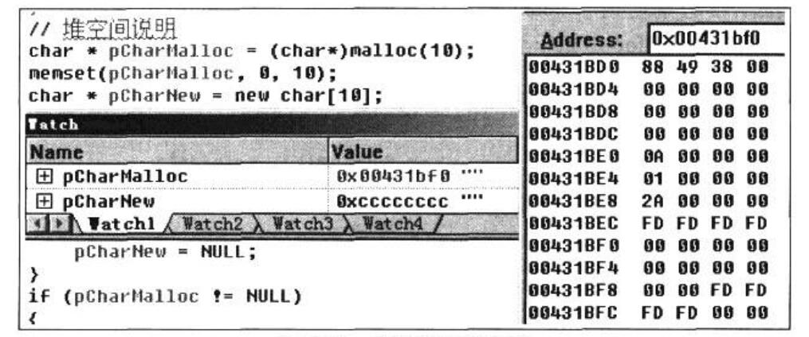
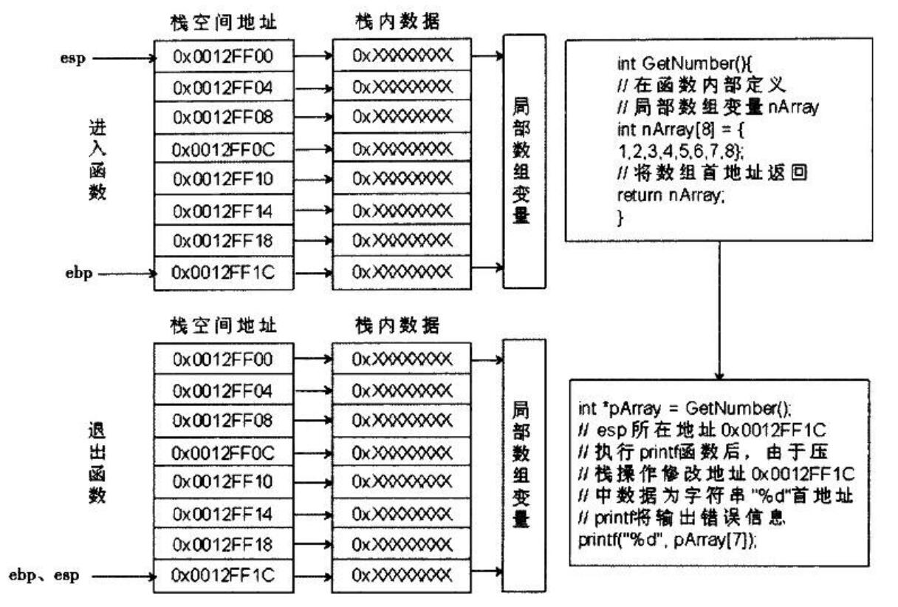
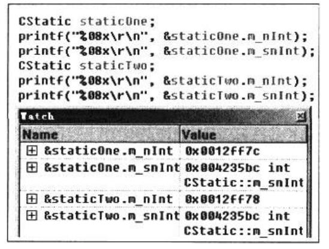
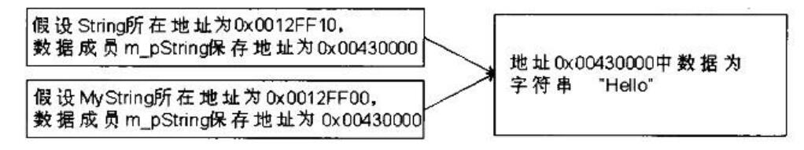

记录一下《C++反汇编与逆向分析技术》(四)
变量在内存中的位置和访问方式
变量的作用域
指的是变量在源码中可以被访问到的范围。全局变量属于进程作用域，也就是说，在整个进程中都能够访问到这个全局变量;静态变量属于文件作用域，在当前源码文件内可以访问到:局部变量属于函数作用域，在函数内可以访问到;在“{}”语句块内定义的变量，属于块作用域，只能在定义变量的“{ }”块内访问到。
变量的生命周期
指的是变量所在的内存从分配到释放的这段时间。变量所在的内存被分配后，我们可以形象地将这比喻为变量的生命开始;变量所在的内存被释放后，我们可以将这比喻为变量的消亡。
全局变量和局部变量的区别
在大多数情况下，在PE文件中的只读数据节中，常量的节属性被修饰为不可写，而全局变量和静态变量则在属性为可读写的数据节中。
1 | int g_nVariableType = 117713190; |
通过对代码的分析可知，访问全局变量与访问常量类似——都是通过立即数来访问。由于全局变量在编译期就已经确定了具体的地址，因此编译器在编译的过程中可以计算出一个固定的地址值。而局部变量需要进入作用域内，通过申请栈空间存放，利用栈指针ebp或esp间接访问，其地址是-一个未知可变值，编译器无法预先计算。
全局变量在内存中的地址顺序是先定义的变量在低地址，后定义变量在高地址。
全局变量的特征：
- 所在地址为数据区，生命周期与所在模块一致
- 使用立即数间接访问
局部变量的特征：
- 所在地址为栈区，生命周期与所在的函数作用域一致
- 使用ebp或esp间接访问
局部静态变量的工作方式
静态变量分为全局静态变量和局部静态变量。
全局静态变量等价于编译器限制外部源码文件访问的全局变量。
局部静态变量比较特殊，它不会随作用域的结束而消失，并且在未进人作用域之前就已经存在，其生命周期也和全局变量相同。局部静态变量会预先被作为全局变量处理，而它的初始化部分只是在做赋值操作。
来个demo：
1 | //C++源码说明：全局变量的访问 |
地址0x004257CC中保存了局部静态变量的一个标志，这个标志占位1个字节。通过位运算，将标志中的一位数据置1，以此判断局部静态变量是否已经被初始化过。由于一个静态变量只使用了1位，而1个字节数据占8位，因此这个标志可以同时表示8个局部静态变量的初始状态。通常，在VC++6.0中，标志所在的内存地址在最先定义的局部静态变量地址的附近，如最先定义的整型局部静态变量在地址0x004257C0处，那么标记位通常在地址0x004257C4或0x004257BC处。当同一作用域内超过8个局部静态变量时，下一个标记位将会在第9个定义的局部静态变量地址附近。识别局部静态变量的标志位地址并不是目的，主要是根据这个标志位来区分全局变量与局部静态变量。
但是当局部静态变量被初始化为一个常量值时，这个局部静态变量在初始化过程中不会产生任何代码。
由于初始化的数值为常量，即多次初始化不会产生变化。这样无需再做初始化标志，编译器采用了直接以全局变量方式处理，优化了代码，提升了效率。虽然转换为了全局变量，但仍然不可以超出作用域访问。那么编译器是如何让其他作用域对局部静态变量不可见的呢?通过名称粉碎法，在编译期将静态变量重新命名。
来个总结：
1 | ; reg_flag表示存放初始化标志的寄存器r8，通常使用寄存器中的低位，如al等 |
堆变量
new和malloc的区别：
1 | // C++ 源码说明(Debug 编译选项) ; new与malloc |
堆空间的分配类似于商场中的商铺管理，malloc是从商场的空地中划分出一块作为商铺，而new则可以将划分好的商铺直接租用。由于malloc缺少商铺的营业范围规定，因此需要将申请好的堆强制转换以说明其类型方可使用，而new则无需这种操作，直接可以使用。
申请堆空间的过程中调用了函数 _ heap_ alloc_dbg， 其中使用 _CrtMemBlockHeader结构描述了堆空间中的各个成员。在内存中，堆结构的每个节点都是使用双向链表的形式存储的，在 _CrtMemBlockHeader 结构中定义了前指针pBlockHeaderPrev 和后指针pBlockHeaderNext，通过这两个指针就可遍历程序中申请的所有堆空间。成员lRequest记录了当前堆是第几次申请的，例如第10次申请堆操作对应的数值为0x0A; 成员gap为保存堆数据的数组，在Debug版下，这个数据的前后4个字节被初始化为0xFD,用于检测堆数据访问过程中是否有越界访问。 _CrtMemBlockHeader 结构的原型如下:
1 | typedef struct _CrtMemBlockHeader{ |
来个实操，我太懒了直接拿书上的图吧，嘻嘻嘻

在图中，内存监视窗口的数据为使用malloc后申请的堆空间数据。new或malloc函数返回的地址为堆数据地址0x00431BF0，堆数据地址减4后，其数据为0xFDFDFDFD,这是往上越界的检查标志。堆数据地址减8后数据为0x2A,表示此堆空间为第0x2A次申请堆操作，说明在其之前多次申请过堆空间。堆数据空间的容量存储在地址0x00431BE0处，该堆空间占10个字节大小。地址0x00431BD0处为上一个堆空间首地址。地址0x00431BD4处的数据为0，表示没有下个一堆空间。在堆数据的末尾也加入了0xFDFDFDFD，这是往下越界的检查标志，这是程序编译方式为Debug版的重要特征之一。
数组和指针的寻址
数组在函数内
对于数组的识别，判断数据在内存中是否连续并且类型是否一致，均符合即可将此段数据视为数组。
在C++中，字符串本身就是数组，根据约定，该数组的最后-一个数据统一使用0作为字符串结束符。在VC++ 6.0编译器下，为字符类型的数组赋值(初始化)其实是复制字符串的过程。这里并不是单字节复制，而是每次复制4字节的数据。两个内存间的数据传递需要借用寄存器，而每个寄存器一次性可以保存4字节的数据，如果以单字节的方式复制就会浪费掉3字节的空间，而且多次数据传递也会降低执行效率。如果字符串字节数不满足4的倍数，最后一次数据复制过程中按照1或者2字节的方式复制。
数组作为参数
来份代码
1 | //C++源码说明：数组作为参数 |
当数组作为参数时，数组的下标值被省略了。这是因为，当数组作为函数形参时，函数参数中保存的是数组的首地址，是一个指针变量。
在release版下，字符串处理函数会被作为内联函数编译处理，康康：
1 | // C++源码对照 |
这个实现过程为先将eax清零，然后通过指令repne scasb遍历字符串，寻找和eax匹配的字符。由于指令repne scasb中的前缀repne是用来考察ecx的值，因此在ecx不为0且ZF标志为0时才重复操作，在操作过程中对ecx自动减1。
ecx的初始值为0xffffffff，有符号数值为-1，repne前缀每次执行时会自动减1，如果edi指向的内容为字符串结束符(asc 值0),则重复操作结束。注意，重复操作完成时ecx的计数包含了字符串末尾的0。假设字符串长度为Len,我们可得到等式:
1 | ecx(终值) = ecx(初值) - (Len+1) |
那strcpy函数原型也比较好分析了，release版
1 | ;main函数讲解略 |
数组作为返回值
数组作为函数得返回值与作为函数的参数差不多，都是将数组的首地址以指针的方式进行传递。不同点是当数组作为参数时，其定义所在的作用域必然在函数调用以外，在调用前已经存在，所以，在函数中对数组进行操作是没有问题的，而数组作为函数返回值则存在着一定的风险。
当数组为局部变量数据时，便产生了稳定性问题。当退出函数时，需要平衡栈，而数组是作为局部变量存在，其内存空间在当前函数的栈内。如果此时函数退出，栈中定义的数据将变得不稳定。由于函数退出后esp会回归到调用前的位置上，而函数内的局部数组在esp之下，随时都有可能由在其他函数的调用过程中产生的栈操作指令将其数据破坏。数据的破坏将导致函数返回结果具备不确定性，影响程序的结果，如图所示。

在图中，返回了函数GetNumber中定义的局部数组的首地址nArray,其所在地址处于0x0012FF00~0x0012FF1C之间。当函数调用结束后，栈顶指向了地址0x0012FF1C。此时数组nArray中的数据已经不稳定，任何栈操作都有可能将其破坏。
在执行“print(“%d”, pAray[7]);”后，由于需要将参数压栈，地址0x0012FF1C~0x0012FF18之间的数据已经被破坏，无法输出正常结果。
如果既想使用数组作为返回值，又要避免图中的错误，可以使用全局数组、静态数组或是上层调用函数中定义的局部数组。
well，全局数组就是很常见的那种，懒得放了，看一下静态数组：
1 | void main(){ |
下标寻址和指针寻址
下标访问(寻址): a[n] 效率高
指针访问(寻址): *(a+n)
看一下区别，Debug版
1 | //C++源码说明：两种寻址方式演示 |
指针寻址比下标寻址多一次寻址操作，效率自然低，但是指针寻址可以修改地址中保存的数据，访问其他内存中的数据，而数组下标在没有越界使用的情况下只能访问数组内的数据。
下标值的三种表现方式
下标值为整型常量的寻址
编译器可以直接计算出数据所在的地址
下标值为整型变量的寻址
编译器先进行地址偏移计算，然后得出目标数据所在的地址
下标值为整型表达式的寻址
会先计算出表达式的结果，然后将其结果作为下标值
顺带一提，数组越界就是下标越范围，蛮好懂的
多维数组
多维数组在内存中的存储方式和一维数组是一样的，但在寻址方面，二维数组的寻址过程比一维数组多一步操作，先取得二维数组中某个一维数组的首地址，再利用此地址作为基址寻址到一维数组中某个数据地址处。
若其中某一下标值为常量，则不会出现二次寻址计算，二维数组寻址转换成汇编后的代码和一维数组差不多，因为下标值为常量，且类型大小可预先计算出，因此变成两常量计算。利用常量折叠可直接计算出偏移地址。
来个release版
1 | void main() { |
这个”eax+ecx*2”保存了二维数组的两个下标值：i、j。寻址过程如下：
1)使用数组首地址加二维数组下标i乘以-维数组大小，得到一维数组首地址。
2)通过1)获取一维数组首地址后，加下标j乘以类型大小，得到的数据如下:
二维数组type nArry[M][N];使用i、j作为下标寻址
nArray + i * sizeof(type [N]) + j * sizeof(type)
= nArray+i* N * sizeof(type) +j * sizeof(type)
= nArray + sizeof(type)*(i *N +j)
三维数组类似，不列举了
存放指针类型数据的数组
存放指针类型的数据的数组就是数组中各数据元素都是由相同类型指针组成。
| 组成部分1 | 组成部分2 | 组成部分3 |
|---|---|---|
| 类型名* | 数组名称 | [元素个数] |
举个栗子，存储三个字符串”Hello”,”World”,”!\r\n”，指针数组是一维的，存储的是字符串的首地址，字符数组是二维的，将每个字符存储进去
这样寻址的时候，会发生差异：
1 | printf(pBuff[1]); |
字符数组寻址后得到的是某一维数组的首地址
指向数组的指针变量
当指针变量保存的数据为数组的首地址，且将此地址解释为数组时，此指针变量被称为数组指针。
指向一维数组的数组指针定义格式：
| 组成部分1 | 组成部分2 | 组成部分3 |
|---|---|---|
| [类型名] | [*指针变量名称] | [一维数组大小] |
对指向二维数组的数组指针执行取内容操作后，得到的还是一个地址值，再次执行取内容操作才能寻址到二维字符数组中的单个字符数据。看上去与二级指针相似，实际上并不一样。二级指针的类型为指针类型，其偏移长度在32位下固定为4字节，而数组指针的类型为数组，其偏移长度随数组而定，两者的偏移计算不同，不可混为一谈。
main函数的三个参数(main(int argc,char *argv[],char *envp[]))分别为：
- argc:命令行参数个数，整型。
- argv:命令行信息，保存字符串数组首地址的指针变量，是一个指向数组的指针。
- envp:环境变量信息，和argv类型相同。
来个main函数参数的demo看一看：
1 | // C++源码与对应汇编代码讲解 |
argv是一个参数，保存着字符串数组的首地址，因此需要”mov eax,dword ptr[ebp+0Ch]”指令队其取内容，得到数组首地址。
对三维数组 int nArray[2] [3] [4] 可转换成int (*pnArray) [3] [4] = nArray;
指针在地址偏移过程中需要计算出偏移量，因此需要所指向的数据类型来配合计算偏移长度。在多维数组中，可以将最高维看做是- -维 数组，其后数据为这个- -维 数组中各元素的数据类型。所以第一个维数可以省去。
函数指针
用于保存函数首地址的指针变量被称为函数指针。函数指针是不允许执行加法和减法运算的
来两份代码看看：
1 | 函数指针与函数——Debug版 |
1 | 带参数和返回值的函数指针——Debug版 |
结构体和类
在C++中，结构体和类都具有构造函数、析构函数和成员函数，两者只有一个区别:结构体的访问控制默认为public，而类的默认访问控制是private。
对象的内存布局
一般来说，类对象的计算公式如下：
对象长度 = sizeof(数据成员1) + sizeof(数据成员2) + sizeof(数据成员3) + … + sizeof(数据成员n)
但是会出现以下例外：
- 空类。空类中没有任何数据成员，按照该公式计算得出的对象长度为0字节。类型长度为0，则此类的对象不占据内存空间。而实际情况是，空类的长度为1字节。如果对象完全不占用内存空间，那么空类就无法取得实例对象的地址，this 指针失效，因此不能被实例化。而类的定义是由成员数据和成员函数组成，在没有成员数据的情况下，还可以有成员函数，因此仍然需要实例化，分配了1字节的空间用于类的实例化，这1字节的数据并没有被使用。
- 静态数据成员。当类中的数据成员被修饰为静态时，对象的长度计算又会发生变化。虽然静态数据成员在类中被定义，但它与静态局部变量类似，存放的位置和全局变量一致。只是编译器增加了作用域的检查，在作用域之外不可见，同类对象将共同享有静态数据成员的空间。
- 内存对齐。在VC++6.0中，类和结构体中的数据成员是根据它们在类或结构体中出现的顺序来依次申请内存空间的，由于内存对齐的原因，它们并不- -定会像数组那样连续地排列。由于数据类型不同，因此占用的内存空间大小也会不同，在申请内存时，会遵守一定的规则。
重点讲一下第三种：
在为结构体和类中的数据成员分配内存时，结构体中的当前数据成员类型长度为M，指定的对齐值为N，那么实际对齐值为q = min(M, N)，其成员的地址安排在q的倍数上。如以下代码所示:
1 | Struct tagTEST{ |
数据成员sShort 的地址为0x0012FF74，类型为short,占2字节内存空间。VC++ 6.0指定的对齐值默认为8，short 的长度为2，于是实际的对齐值取较小者2。所以，short 被分配在地址0x0012FF74处，此地址是2的倍数，可分配。此时，轮到为第二个数据成员分配内存了，如果分配在sShort后，应在地址0x0012FF76处，但第二个数据成员为int类型，占4字节内存空间，与指定的对齐值比较后，实际对齐值取int类型的长度4，而地址0x0012FF76不是4的倍数，需要插入两个字节填充，以满足对齐条件，因此第二个数据成员被定义在地址0x0012FF78处。
上例讲到了结构体成员对齐值的问题，现在讨论一下对齐值对结构体整体大小的影响。如果按VC++ 6.0默认的8字节对齐，那么结构体的整体大小要能被8整除，如以下代码所示:
1 | Sruct{ |
上例中结构体成员的总长度为8+4+2=14，按默认的对齐值设置要求，结构体的整体大小要能被8整除，于是编译器在最后一个成员sShort所占内存之后加入2字节空间填补到整个结构体中，使总大小为8+4+2+2=16,这样就满足了对齐的要求。
但是，并非设定了默认对齐值就将结构体的对齐值锁定。如果结构体中的数据成员类型，最大值为M，指定的对齐值为N,那么实际对齐值为min(M, N),如以下代码所示:
1 | Struct{ |
以上结构应该按照4字节的方式对齐，其布局格式如下所示:
1 | cChar 所在地址; 0x0012FF00~0x0012FF04之间，占4字节，对齐nInt |
既然有默认的对齐值，就可以在定义结构体时进行调整，VC++ 6.0中可使用预编译指令#pragma pack(N)来调整对齐大小。修改以上示例，调整对齐值为1，如以下代码所示:
1 | #pragma pack(1) |
调整对齐值后，根据对齐规则，在分配nInt时无需插入空白数据。对齐值为1, nInt 占4字节大小，很明显，使用pack设定的对齐值更小，因此采用对齐值1的倍数来计算分配内存空间的首地址，nInt 只需紧靠在cChar之后即可。这样cChar只占用1字节内存空间。由于设定的对齐值小于等于结构体中所有数据成员的类型长度，因此结构总长度只要是1的倍数即可。在这个例子中，结构总长度为7。
使用pack修改对齐值也并非一定会生效， 与默认对齐值一样，都需要参考结构体中的数据成员类型。当设定的对齐值大于结构体中的数据成员类型大小时，此对齐值同样是无效的。
当结构体中以数组作为成员时，将根据数组元素的长度计算对齐值，而不是按数组的整体大小去计算，如以下代码所示:
1 | struct{ |
按照对齐规定，cChar 与cArray的对齐没有缝隙，无需插入空白数据，当cArray与sShort进行对齐时，cChar 与cArray在内存中将会占5字节，此时按照结构中当前的数据类型short进行对齐，插入1字节的数据即可，其结构布局如下所示:
1 | cChar 所在地址: 0x0012FF00~0x0012FF01之间，占1字节 |
当结构体中出现结构体类型的数据成员时，不会将嵌套的结构体类型的整体长度参与到对齐值计算中，而是以嵌套定义的结构体所使用的对齐值进行对齐，如以下代码所示:
1 | struct tagOne{ |
在以上结构中，虽然tagOne结构占8字节大小，但由于其对齐值为2,因此tagTwo结构体中的最大类型便是int,以4作为对齐值。所以，结构tagTwo的总大小并非以8字节对齐的16字节，而是以4字节对齐的12字节。
this指针
指针访问结构体或类成员的公式：
假设type为某个正确定义的结构体或者类，member是type中可以访问的成员：
1 | type *p |
举个栗子~如果有以下定义：
1 | struct A{ |
那么pA->m_float的地址=0x0012ff00 + 4 = 0x0012ff04
ok~，来看一份Debug版的代码
1 | //C++源码说明：类定义以及数据成员的访问 |
在使用默认的调用约定时，在调用成员函数的过程中，编译器做了一个“小动作”:利用寄存器ecx保存了对象的首地址，并以寄存器传参的方式传递到成员函数中，这便是this指针的由来。这样的默认调用约定称为thiscall。
在VC++的环境下，识别this指针的关键点是在函数的调用过程中使用了ecx作为第一个参数，并且在ecx中保存的数据为对象的首地址，但并非所有的this指针的传递都是如此。thiscall的栈平衡方式与__stdcall相同，都是由被调用方负责平衡。但是，两者在传参的过程中却不一样，声明为thiscall的函数，第一个参数使用寄存器ecx传递，而非通过栈顶传递。而且thiscall并不属于关键字，它是C++中成员函数特有的调用方式，在C语言中是没有这种调用方式的。因此函数无法显式声明为thiscall调用方式，而类的成员函数默认是thiscall调用方式。所以，在分析过程中，如果看到某函数使用ecx传参，且ecx中保留了对象的this指针，以及在函数实现代码内，存在this指针参与的寄存器相对间接访问方式，如[reg+8]，即可怀疑此函数为成员函数。
当使用其他调用方式(如stdcall) 时，this 指针将不再使用ecx传递，而是改用栈传递，举个栗子~
1 | //C++源码说明：数组和局部变量的定义以及初始化 |
这种 __ cdecl 调用方式和 __gstdcall 调用方式只是在参数平衡时有所区别，this指针不容易识别。
使用thiscall调用放式的成员函数的要点分析：
1 | lea ecx,[mem] ;取对象首地址并存入ecx中，要注意观察内存 |
符合以上特点，基本可判定这是调用类的成员函数。通过分析函数代码中访问ecx的方式，并结合内存窗口，以ecx中的值为地址去观察其数据，可以进一-步分析并还原出对象中的各数据成员。
__ stdcall与 __cdecl调用方式的成员函数分析：
1 | lea reg,[mem] ;取出对象首地址并存入寄存器变量中 |
静态数据成员
当类中定义了静态数据成员时，由于静态数据成员和静态变量原理相同(是一个含有作用域的特殊全局变量)，因此该静态数据成员的初值会被写入编译链接后的执行文件中。当程序被加载时，操作系统将执行文件中的数据读到对应的内存单元里，静态数据成员便已经存在，而这时类并没有实例对象。所以静态数据成员和对象之间的生命周期不同，并且静态数据成员也不属于某一对象，与对象之间是一对多的关系。静态数据成员仅仅和类相关，和对象无关，多个对象可以共同拥有同一个静态数据成员。
两个对象各自的成员数据在内存中的地址不同，而静态数据成员的地址却相同。如图

在计算类和对象的长度时，静态数据成员不被计算在内。
普通数据成员的地址是一个栈空间地址，而静态数据成员的是一个常量地址，可通过立即数间接寻址的方式访问。访问时无需this指针。
对象作为函数参数
对象作为函数的参数时，其传参过程与数组不同:数组变量的名称代表数组的首地址，而对象的变量名称却不能代表对象的首地址。传参时不会像数组那样以首地址作为参数传递，而是先将对象中的所有数据进行备份(复制),将复制的数据作为形参传递到调用函数中使用。
来个栗子~
1 | //C++源码说明：参数为对象的函数调用 |
类的体积不大，只有两个数据成员，编译器在调用函数传参的过程中分别将对象的两个成员荡产两个int类型数据依次压栈，类对象中的数据成员的传参顺序为:最先定义的数据成员最后压栈，最后定义的数据成员最先压栈。
来看看数组当参数的情况~
1 | // C++源码说明;此代码为修改版，添加了数组成员char m_szName [32] |
在代码清单9-6中，在传递类对象的过程中使用了“add esp, 0FFFFFFE0h”来调整栈顶指针esp，0FFFFFEOh 是补码，转换后为-20h,等同于esp-20h。前面讲过，参数变量在传递时，需要向低地址调整栈顶指针esp,此处申请的32字节栈空间，加上strcpy未平衡的8字节参数空间，都用于存放参数对象FunTest的数据。将对象FunTest中的数据依次复制到申请的栈空间中。
上面两份代码定义的类都没有定义构造函数和析构函数。由于对象作为参数在传递过程中会制作一份对象的复制数据，当向对象分配内存时，如果有构造函数，编译器会再调用一次构造函数，并做一些初始化工作。当代码执行到作用域结束时，局部对象将被销毁，而对象中可能会涉及资源释放的问题，同样，编译器也会再调用一次局部对象的析构函数，从而完成资源数据的释放。
当对象作为函数的参数时，由于重新复制了对象，等同于又定义了一个对象，在某些情况下会调用特殊的构造函数——拷贝构造函数。当函数退出时，复制的对象作为函数内的局部变量，将被销毁。当析构函数存在时，则会调用析构函数，这时候会出现问题，来个栗子！
1 | //C++源码说明：涉及资源申请与释放的类的对象 |
在代码中，当对象作为参数被传递时，参数MyStringCpy复制了对象MyString中的数据成员m_pString，产生了两个CMyString类的对象。由于没有编写拷贝构造函数，因此在传参的时候就没有被调用，这个时候编译器以浅拷贝处理，它们的数据成员m_pString都指向了同一个堆地址，如图所示。

根据图所示，两个对象中的数据成员m_pString指向了相同地址，当函数ShowMyString调用结束后，便会释放对象MyStringCpy，以对象MyStringCpy的首地址作为this指针调用析构函数。在析构函数中，调用delete函数来释放掉对象MyStringCpy的数据成员m_ pString 所保存的堆空间的首地址。但对象MyStringCpy是MyString的复制品，真正的MyString还存在，而数据成员m_pString所保存的堆空间的首地址却被释放，如果出现以下代码便会产生错误:
1 | CMyString MyString; |
两个方案解决这个问题
- 深拷贝数据:在复制对象时，编译器会调用一次该类的拷贝构造函数，给编码者一次机会。深拷贝利用这次机会将原对象的数据成员所保存的资源信息也制作一份副本。这样，当销毁复制对象时，销毁的资源是复制对象在拷贝构造函数中制作的副本，而非原对象中保存的资源信息。
- 设置引用计数:在进入拷贝构造函数时，记录类对象被复制引用的次数。当对象被销毁时，检查这个引用计数中保存的引用复制次数是否为0。如果是，则释放掉申请的资源，否则引用计数减1。
对象作为返回值
对象作为返回值与对象作为参数的处理方式非常类似。对象作为参数时，进入函数前预先将对象使用的栈空间保留出来，并将实参对象中的数据复制到栈空间中。该栈空间作为函数参数，用于函数内部使用。同理，对象作为返回值时，进入函数后将申请返回对象使用的栈空间，在退出函数时，将返回对象中的数据复制到临时的栈空间中，以这个临时栈空间的首地址作为返回值。
来个栗子！
1 | //C++源码说明：在函数内定义对象并将其作为返回值 |
代码演示了函数返回对象的全过程。在调用GetCReturn前，编译器将在main函数中申请的返回对象的首地址作为参数压栈，在函数GetCReturn调用结束后进行了数据复制，将GetCReturn函数中定义的局部对象RetObj的数据复制到这个返回对象的空间中，再将这个返回的对象复制给目标对象objA，从而达到返回对象的目的。因为在这个示例中不存在函数返回后为对象的引用赋值，所以这里的返回对象是临时存在的，也就是C++中的临时对象，作用域仅限于单条语句。
这个临时对象的产生原因主要是C++程序员可能采用这类写法，如GetCReturn().m_nNumber,这只是针对返回对象的操作，而此时函数已经退出，其栈帧也被关闭。函数退出后去操作局部对象显然不合适，因此只能由函数的调用方准备空间，建立临时对象，然后将函数中的局部对象复制给临时对象，再把这个临时对象交给调用方去操作。本例中的objA = GetCReturn();是个赋值运算，由于赋值时GetCReturn函数已经退出，其栈空间已经关闭，同理objA不能直接和函数内局部对象做赋值运算，因此需要临时对象记录返回值以后再来参与赋值。
虽然使用临时对象进行了数据复制，但是同样存在出错的风险。这与对象作为参数时遇到的情况一样，由于使用了临时对象进行数据复制，当临时对象被销毁时，会执行析构函数。如果析构函数中有对资源释放的处理，就有可能造成同一个资源多次释放的错误。
编译器在处理简单的结构体和类结构的时候，开启O2优化后，难以识别他们与局部变量的区别
来个栗子！
1 | struct tagUnknow{ |
在通常情况下，VC++6.0编译的代码默认以thiscall方式调用成员函数，因此会使用ecx来保存this 指针，从而进行参数传递，但并非具有ecx传参的函数就一定是成员函数。当使用__fastcall 时，同样可以在反汇编代码中体现出ecx传参。
1 | &((struct A*)NULL)-> m_ float 不会崩溃，这时求m_ float 的地址，根据前面提出的结构体寻址公式: |
这个结束了~